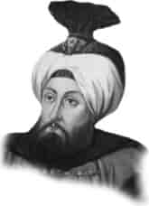

II. AHMET
Annesi : Hatice Muazzez Sultan
Doğumu : 25 Şubat 1643
Vefatı : 6 Şubat 1695
Saltanatı : 1691 - 1695 (4 yıl)
II. Ahmet, İstanbul’da doğdu. Annesi onun terbiyesi ve tahsili ile sıkı bir şekilde meşgul oldu. Son derece faal ve her işi bizzat idare etmek isteyen biriydi. Yazı yazma kabiliyeti çok üstündü. Kendisi birçok Kur’an-ı Kerim yazmıştır. Arapça ve Farsça lisanlarına vakıftı. Devlet işlerini çok yakından takip eder, hasta bile olsa divan toplantılarına katılırdı.
Şairlere ve şiirlere düşkündü. Fazıl Mustafa Paşa’yı Sadrazamlıkta bıraktı. Salan Kamen Meydan Muharebe-si’nde, Köprülü Fazıl Mustafa Paşa şehit düştü (1691). Venediklilerle Hanya’da şiddetli çarpışmalar yapıldı ve Hanya Zaferi elde edildi. (Ağustos 1692).1693 yılında İstanbul’da iki yangın oldu ve beş bin bina yandı. Almanlar aynı yıl Belg-rad’ı kuşattılar ve 10.000 ölü vererek çekildiler. 21 Eylül’de Sakız düştü.
II. Ahmet 6 Şubat 1695 yılında Edirne’de vefat etti. Cenazesi, ağabeyi II. Süleyman gibi İstanbul’a getirildi ve Kanuni Sultan Süleyman Türbesi’ne gömüldü.
Erkek çocukları: İbrahim, Selim.
Kız çocukları: Atike, Hatice, Asiye.